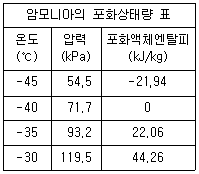
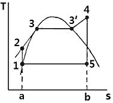
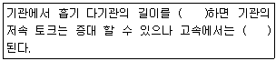
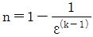
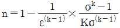
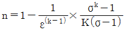
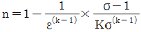
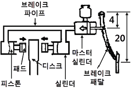
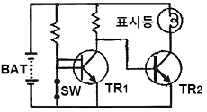

자동차정비기사 (2013-06-02 기출문제)
1과목: 일반기계공학
1. 축방향 인장하중을 받는 균일 단면봉에서 최대 수직응력이 60MPa일 때 최대 전단응력은 얼마인가?
- 60MPa
- 40MPa
- 30MPa
- 20MPa
(정답률: 82%)

2. 구름베어링에 비교한 미끄럼베어링의 특징을 설명한 것으로 올바른 것은?
- 호환성이 높은 것이다.
- 표준형 양산품으로 제작하기 보다는 자체 제작하는 경우가 많다.
- 구름마찰이며, 기동마찰이 작다.
- 비교적 큰 하중을 받으며 충격 흡수 능력이 크다.
(정답률: 73%)
3. 연삭숫돌의 결합도에 관한 설명으로 틀린 것은?
- 결합도 기호는 알파벳 대문자로 표시한다.
- 결합도가 약하면 눈메움(loading) 현상이 발생하기 쉽다.
- 결합도는 입자를 결합하고 있는 결합제의 결합상태의 강약의 정도를 표시한다.
- 가공물의 재질이 연질일수록 결합도가 높은 숫돌을 사용하는 것이 좋다.
(정답률: 61%)
4. 다음 중 리드각 α, 마찰계수 μ(tan ρ)인 사각나사가 자립(self locking) 할 수 있는 조건은?
- α ＜ ρ
- α ＜ 3ρ
- α ＞ ρ
- α ＞ 3ρ
(정답률: 63%)
5. 마이크로미터의 측정 및 보관 시 유의사항에 관한 설명으로 옳지 않은 것은?
- 피측정물의 형상, 치수, 요구 정도 등에 대해 알맞은 측정기를 선택해서 사용해야 한다.
- 피측정물 및 마이크로미터의 각 부위를 깨끗이 닦은 후 측정을 하도록 한다.
- 측정력은 0점 조정을 할 때와 피측정물을 측정할 때에도 동일하게 해야 한다.
- 보관 시에는 마이크로미터의 주요 부위를 잘 닦은 후 앤빌과 스핀들면을 접촉시켜서 보관한다.
(정답률: 76%)
6. 원형단면을 가진 단순지지보가 중앙지점에 100N의 집중하중을 받고 있다. 단면의 지름 20㎜, 길이 100㎝일 때 보속에 발생하는 최대전단응력은 몇 N/cm2인가?
- 2.6
- 5.3
- 10.6
- 21.2
(정답률: 28%)
7. 전위기어의 장점으로 거리가 먼 것은?
- 모듈에 비하여 강한 이가 얻어진다.
- 최소 잇수를 적게 할 수 있다.
- 물림율을 증대시킬 수 있다.
- 베어링 압력을 감소시킬 수 있다.
(정답률: 62%)
8. 일반적으로 금속을 소성가공 할 때, 열간가공과 냉간가공을 구분하는 온도는?
- 용융 온도
- 탬퍼링 온도
- 재결정 온도
- 동소 변태 온도
(정답률: 66%)
9. 주형 제작에 사용되는 탕구계(gating system)의 구성요소에 속하지 않는 것은?
- 열풍로
- 주탕컵
- 쇳물받이
- 탕도
(정답률: 68%)
10. 고급주철 제조방법 중 Fe - Si 또는 Ca - Si 등을 첨가하여 접종(inoculation)시켜 흑연의 형상을 미세화, 균일화하여 인성과 연성을 증가시키는 주철제조방법은?
- 란쯔(Lanz) 법
- 에멜(Emmel)법
- 피보와르스키(Piwowarski) 법
- 미한(Meehan) 법
(정답률: 69%)
11. 브레이크의 마찰계수를 μ, 드럼의 원주속도를 v, 접촉면의 압력을 p라 할 때 브레이크 용량을 계산하는 식은?
- μ/pv
- πμ/pv
- μpv
- πμpv
(정답률: 61%)
12. 보일러와 같은 용기를 리벳이음으로 제작한 후 강판의 가장자리를 끌과 같은 공구로 기밀을 유지하기 위하여 행하는 작업은?
- 커링(curling)
- 시밍(seaming)
- 코킹(caulking)
- 비딩(beading)
(정답률: 77%)
13. 원심펌프의 수관 내경은 20㎝, 전체길이 100m, 관의 마찰계수는 0.02, 흡수면으로부터 송출면까지 높이가 30m인 곳에 유량을 6m3/min으로 송출하는 경우 모터의 동력은 약 몇 kW 이상이어야 하는가? (단, 마찰에 의한 손실을 제외한 기타 손실을 제외한다.)
- 30.2kW
- 34.5kW
- 41.6kW
- 49.8kW
(정답률: 28%)
14. 단면이 원형인 기둥에 13t의 압축하중이 작용하였을 경우에 80N/cm2의 압축 응력이 생겼다고 하면 단면의 지름은 약 ㎝인가? (단, 중력가속도는 9.8 m/s2으로 한다.)
- 6.4
- 14.8
- 28.6
- 45.0
(정답률: 16%)
15. 지름이 d인 원형 단면의 중성점의 극점을 통과하는 극관성 모멘트(polar moment of inertia)는?
- πd4/32
- πd4/64
- πd3/32
- πd3/64
(정답률: 37%)
16. 탄소강의 열처리 조직으로 경도가 큰 것부터 순서대로 나열한 것은?
- 소르바이트 ＞ 오스테나이트 ＞ 마텐자이트
- 마텐자이트 ＞ 오스테나이트 ＞ 소르바이트
- 마텐자이트 ＞ 소르바이트 ＞ 오스테나이트
- 소르바이트 ＞ 마텐자이트 ＞ 오스테나이트
(정답률: 61%)
17. 송출량이 많고 저양정인 경우 적합하며 회전차의 날개가 선박의 스크루 프로펠러와 유사한 형상인 펌프는?
- 터빈펌프
- 기어펌프
- 축류펌프
- 왕복펌프
(정답률: 70%)
18. 개스킷(gasket)의 구비조건으로 거리가 먼 것은?
- 사용온도의 범위가 넓어야 한다.
- 탄성이 양호해야 한다.
- 내노화성이 높아야 한다.
- 용제성이 높아야 한다.
(정답률: 73%)
19. 베어링 합금 중 Cu에 Pb 25-40%를 첨가한 합금으로서 항공기, 자동차용 베어링 등에 사용되는 합금을 무엇이라 하는가?
- 배빗메탈(Babbitt metal)
- 화이트메탈(white metal)
- 켈밋(kelmet)
- 실루민(silumin)
(정답률: 69%)
20. 아크 용접 시 언더컷 결함 발생으로 거리가 먼 것은?
- 전류가 너무 낮을 때
- 용접속도가 적당하지 않을 때
- 아크 길이가 너무 길 때
- 부적당한 용접봉을 사용할 때
(정답률: 66%)
2과목: 기계열역학
21. 밀폐시스템에서 초기상태가 300K, 0.5m3인 공기를 등온과정으로 150kPa에서 600kPa까지 천천히 압축하였다. 이 과정에서 공기를 압축하는데 필요한 일은 약 몇 kJ인가?
- 104
- 208
- 304
- 612
(정답률: 40%)
22. 기체가 167kJ의 열을 흡수하고 동시에 외부로 20kJ의 일을 했을 때 내부에너지의 변화는?
- 약 187kJ 증가
- 약 187kJ 감소
- 약 147kJ 증가
- 약 147kJ 감소
(정답률: 71%)
23. 가정용 냉장고를 이용하여 겨울에 난방을 할 수 있다고 주장하였다면 이 주장은 이론적으로 열역학 법칙과 어떠한 관계를 갖겠는가?
- 열역학 1법칙에 위배된다.
- 열역학 2법칙에 위배된다.
- 열역학 1, 2법칙에 위배된다.
- 열역학 1, 2법칙에 위배되지 않는다.
(정답률: 59%)
24. 온도 5℃와 35℃ 사이에서 작동되는 냉동기의 최대 성능계수는?
- 10.3
- 5.3
- 7.3
- 9.3
(정답률: 58%)
25. 표준대기압, 온도 100℃ 하에서 포화액체 물 1kg이 포화증기로 변하는데 열 2255kJ이 필요하였다. 이 증발과정에서 엔트로피(entropy)의 증가량은 얼마인가?
- 18.6kJ/kg·K
- 14.4kJ/kg·K
- 10.2kJ/kg·K
- 6.0kJ/kg·K
(정답률: 41%)
26. 성능계수가 3.2인 냉동기가 시간당 20 MJ 의 열을 흡수한다. 이 냉동기를 작동하기 위한 동력은 몇 kW인가?
- 2.25
- 1.74
- 2.85
- 1.45
(정답률: 22%)
27. 다음 정상유동 기기에 대한 설명으로 맞는 것은?
- 압축기의 가역 단열 공기(이상기체)유동에서 압력이 증가하면 온도는 감소한다.
- 일차원 정상유동 노즐 내 작동 유체의 출구 속도는 가역 단열과정이 비가역 과정보다 빠르다.
- 스로틀(throttle)은 유체의 급격한 압력증가를 위한 장치이다.
- 디퓨저(diffuser)는 저속의 유체를 가속시키는 기기로 압축기 내 과정과 반대이다.
(정답률: 48%)
28. 전류 25A, 전압 13V를 가하여 축전지를 충전하고 있다. 충전하는 동안 축전지로부터 15W의 열손실이 있다. 축전지의 내부에너지는 어떤 비율로 변하는가?
- ＋310J/s
- -310J/s
- ＋340J/s
- -340J/s
(정답률: 49%)
29. 1kg의 공기가 압력 P1=100kPa, 온도 t1=20℃의 상태로부터 P2=200kPa, 온도 t2=100℃의 상태로 변화하였다면 체적은 약 몇 배로 되는가?
- 0.64
- 1.57
- 3.64
- 4.57
(정답률: 40%)
30. 4kg의 공기를 온도 15℃에서 일정 체적으로 가열하여 엔트로피가 3.35kJ/K 증가하였다. 가열 후 온도는 어느 것에 가장 가까운가? (단, 공기의 정적비열은 0.717kJ/kg·℃이다.)
- 927K
- 337K
- 535K
- 483K
(정답률: 35%)
31. 온도가 127℃, 압력이 0.5MPa, 비체적이 0.4m3/kg인 이상기체가 같은 압력 하에서 비체적이 0.3m3/kg으로 되었다면 온도는 약 몇 ℃인가?
- 16
- 27
- 96
- 300
(정답률: 47%)
32. 포화상태량 표를 참조하여 온도 -42.5℃, 압력 100kPa 상태의 암모니아 엔탈피를 구하면?

- -10.97kJ/kg
- 11.03kJ/kg
- 27.80kJ/kg
- 33.16kJ/kg
(정답률: 57%)
33. 초기에 온도 T, 압력 P 상태의 기체의 질량이 m이 들어있는 견고한 용기에 같은 기체를 추가로 주입하여 질량 3m이 온도 2T 상태로 들어 있게 되었다. 최종 상태에서 압력은? (단, 기체는 이상기체이다.)
- 6P
- 3P
- 2P
- 3P/2
(정답률: 64%)
34. 다음 중 이상적인 오토 사이클의 효율을 증가시키는 방안으로 맞는 것은?
- 최고온도 증가, 압축비 증가, 비열비 증가
- 최고온도 증가, 압축비 감소, 비열비 증가
- 최고온도 증가, 압축비 증가, 비열비 감소
- 최고온도 감소, 압축비 증가, 비열비 감소
(정답률: 69%)
35. 25℃, 0.01 MPa 압력의 물 1 kg을 5 MPa 압력의 보일러로 공급할 때 펌프가 가역단열 과정으로 작용한다면 펌프에 필요한 일의 양에 가장 가까운 값은? (단, 물의 비체적은 0.001m3/kg이다.)
- 2.58kJ
- 4.99kJ
- 20.10kJ
- 40.20kJ
(정답률: 59%)
36. 다음의 기본 랭킨 사이클의 보일러에서 가하는 열량을 엔탈피의 값으로 표시하였을 때 올바른 것은? (단, h는 엔탈피이다.)

- h5 - h1
- h4 - h5
- h4 - h2
- h2 - h1
(정답률: 60%)
37. 흡수식 냉동기에서 고온의 열을 필요로 하는 곳은?
- 응축기
- 흡수기
- 재생기
- 증발기
(정답률: 60%)
38. 출력 10000kW의 터빈 플랜트의 매시 연료소비량이 5000kg/hr이다. 이 플랜트의 열효율은? (단, 연료의 발열량은 33440kJ/kg이다.)
- 25%
- 21.5 %
- 10.9%
- 40%
(정답률: 65%)
39. 어떤 사람이 만든 열기관을 대기압 하에서 물의 빙점과 비등점 사이에서 운전할 때 열효율이 28.6%였다고 한다. 다음에서 옳은 것은?
- 이론적으로 판단할 수 없다.
- 경우에 따라 있을 수 있다.
- 이론적으로 있을 수 있다.
- 이론적으로 있을 수 없다.
(정답률: 66%)
40. 이상기체를 단열팽창시키면 온도는 어떻게 되는가?
- 내려간다.
- 올라간다.
- 변화하지 않는다.
- 알 수 없다.
(정답률: 36%)
3과목: 자동차기관
41. 전자제어 가솔린 기관에서 연료 공급압력이 낮아 질 수 있는 원인으로 틀린 것은?
- 연료필터의 막힘
- 연료 압력조절기의 스프링 및 체크 볼 불량
- 연료 압력 조절기의 진공호스 막힘 또는 진공 누설
- 연료 펌프의 불량 또는 연료공급파이프 누설
(정답률: 64%)
42. 가솔린 기관의 노크 방지법으로 가장 거리가 먼 것은?
- 화염전파 속도를 빠르게 한다.
- 혼합가스에 와류를 증대시킨다.
- 발화온도와 압축비를 높인다.
- 냉각수 및 흡기온도를 낮춘다.
(정답률: 70%)
43. 플라스틱 게이지를 이용하여 크랭크축 베어링 간극을 측정하는 설명으로 맞는 것은?
- 플라스틱 게이지 조각이 미끄러지지 않게 크랭크축이나 베어링에 윤활유를 바르고 크랭크축을 조립한다.
- 베어링의 폭만큼 자른 플라스틱 게이지 조각을 크랭크 저널에 축방향으로 일직선이 되도록 놓는다.
- 플라스틱 게이지 조각을 설치 후 메인베어링 캡을 규정토크로 조인 후 크랭크축을 회전시킨다.
- 저널에 눌려 붙어 있는 플라스틱 게이지의 폭을 측정하고, 측정값의 1/2이 베어링 간극이다.
(정답률: 73%)
44. 압력의 변화를 전기저항으로 변환시켜 압력을 검출하는 자동차의 센서가 아닌 것은?
- 맵센서(MAP Sensor)
- 대기압 센서(BPS : Barometric Pressure Sensor)
- 노크센서(Knock Sensor)
- 차고센서(Vehicle Height Sensor)
(정답률: 76%)
45. 분배형 연료분사 펌프에 대한 설명으로 가장 거리가 먼 것은?
- 펌프 윤활을 위하여 특별한 윤활유를 필요로 하지 않는다.
- 실린더수와 관계없이 분사펌프는 한 개가 설치된다.
- 소형, 경량이다.
- 실린더 수 또는 최고 회전속도의 제한을 받지 않는다.
(정답률: 63%)
46. 자동차 기관의 연속가변 밸브타이밍(CVVT : Continuously Variable Valve Timing)시스템은 기관 회전수 및 차량 부하에 따라 제어된다. 틀리게 설명한 것은?
- 캠샤프트의 위상을 연속적으로 가변한다.
- 밸브 로버랩 양을 연속적으로 변경한다.
- 흡기밸브의 개폐 시기는 TDC에 고정한다.
- 연속가변 밸브타이밍 시스템은 ECU에 의하여 제어된다.
(정답률: 77%)
47. LPG기관에서 피드백 믹서(FBM)의 주 연료 라인에 설치되어 ECU의 듀티제어를 받아 연료량을 조절하는 솔레노이드밸브는?
- 2차 록 솔레노이드밸브
- 슬로 컷 솔레노이드밸브
- 슬로 듀티 솔레노이드밸브
- 메인 듀티 솔레노이드밸브
(정답률: 73%)
48. 대형 디젤 차량에 사용하는 직접분사식 엔진에 관한 설명으로 틀린 것은?
- 공기와 연료의 혼합은 연료분사에서 나오는 연료의 운동에너지에 의해 이루어진다.
- 연소실 형상이 단순하여 열손실이 적다.
- 압축행정 중 열손실이 작아 압축온도가 높기 때문에 압축비가 12-15로 낮아도 예열장치가 불필요하다.
- 피스톤과 실린더로의 전열이 크고 불균일한 온도상승으로 열적장애가 크다.
(정답률: 52%)
49. 차량 총중량 5000kgf의 트럭이 구배 20%의 비포장 길을 20km/h로 올라갈 때 가속저항을 제외한 전 주행저항은? (단, 차의 전면 투영면적 A=5m2, 구름저항계수 μr=0.035, 공기저항계수 μs=0.0⑤kgf/m2·(h/km)2, 총중량과 회전부분상당 중량의 비는 ε=0.08로 한다.)
- 약 176kgf
- 약 1185kgf
- 약 1453kgf
- 약 1547kgf
(정답률: 39%)
50. 피스톤링의 마찰력이 4.9kgf이고, 피스톤의 평균속도를 19 m/s 라고 하면 기관의 마찰 손실마력은?
- 1.24PS
- 1.27PS
- 1.55PS
- 1.57PS
(정답률: 28%)
51. 자동차 기관의 유해배출가스 특성과 혼합비와의 관계가 맞지 않는 것은?
- 이론 혼합비보다 농후하면 CO, HC는 증가하고 NOx는 감소
- 이론 혼합비보다 약간 희박하면 NOx는 증가하고 CO, HC는 감소
- 이론 혼합비보다 현저하게 희박하면 HC는 증가하고 CO, NOx는 감소
- 이론 혼합비보다 농후하면 CO, HC는 감소하고 NOx는 증가
(정답률: 56%)
52. 커먼레일 디젤엔진에서 ECU가 스로틀 플랩을 제어하기 위한 신호가 아닌 것은?
- 기관 회전속도
- 냉각수 온도
- 배기온도
- 흡기온도
(정답률: 67%)
53. 가변흡기장치(Variable geometric induction system)에 대한 다음 설명의 ( )안에 적합한 것은?

- 길게, 흡입저항이 커지므로 출력이 저하
- 길게, 흡입저항이 작아지므로 출력이 증가
- 짧게, 흡입저항이 커지므로 출력이 저하
- 짧게, 흡입저항이 작아지므로 출력이 증가
(정답률: 74%)
54. 가솔린 기관에서 기관의 시동 시에 공급하는 혼합비의 값은?
- 이론공연비보다 농후하다.
- 이론공연비보다 희박하다.
- 혼합비의 값에는 관계없다.
- 정확한 이론공연비의 값으로 공급한다.
(정답률: 75%)
55. 가솔린 직접 분사식 GDI(Gasoline Direct Injection) 엔진의 특징이 아닌 것은?
- 수평 흡입 통로 방식(실린더헤드)
- 고압 연료펌프
- 전자식 고압 스월 인젝터
- 보올 피스톤
(정답률: 54%)
56. 전자제어 기관의 지르코니아 산소센서(ZrO2)에 대한 설명 중 틀린 것은?
- 산소센서가 냉각되어 있으면 산소농도의 검출이 불가능하다.
- 이론공연비에 가깝게 연소되면 산소센서에서 기전력은약 0.45-0.5V이다.
- 배기가스 중 산소 농도가 높으면 산소 센서의 기전력이약 0.9V로 높게 발생한다.
- 배기가스 중에 산소농도를 전기적으로 검출한다.
(정답률: 78%)
57. 전자제어 가솔린 기관 연료분사장치의 특성에 관한 설명으로서 관계가 없는 것은?
- 엔진의 응답성이 좋다.
- 실린더의 혼합기 분배가 균일하다.
- 연료계통의 구조가 간단하다.
- 컨트롤러를 사용하기 때문에 제어가 용이하다.
(정답률: 74%)
58. 내연기관의 열역학적 정압 사이클에서 이론 열효율을 구하는 공식은 ?(단, ε : 압축비, k : 비열비, σ : 단절비이다.)




(정답률: 64%)
59. 냉동사이클의 몰리에르 선도에서 냉매의 상태에 대한 설명으로 틀린 것은?
- 습포화 증기를 계속 가열하면 액체는 계속 증발하여 전부 기체가 되는 것을 건포화증기라 한다.
- 포화증기와 과열증기의 온도차를 과열도라 한다.
- 포화액은 냉각하면 오히려 온도가 올라가며 이것을 과냉각액이라 한다.
- 건포화 증기를 계속 가열하게 되면 포화증기의 온도는 계속 올라간다.
(정답률: 65%)
60. 기관의 크랭크 케이스 환기장치에서 PCV(Positive Crankcase Ventilation valve)가 완전 작동하여 진공통로가 작아진 경우 기관의 작동조건은?
- 기관 정지 시
- 공회전 혹은 감속 시
- 기관 가속 시
- 과부하시
(정답률: 61%)
4과목: 자동차새시
61. 조향요소에서 캠버에 대한 설명으로 틀린 것은?
- 차량의 무게가 무거울수록 (-)캠버로 변한다.
- 과도한 캠버는 타이어의 바깥쪽을 마모시킨다.
- 앞바퀴가 수직방향의 하중에 의해 아래로 벌어지는 것을 방지한다.
- 차량을 옆에서 보았을 때 수직선에 대해서 타이어를 회전시키는 조향축이 이루는 각도이다.
(정답률: 70%)
62. 자동차용 수동변속기의 클러치 용량에 대한 설명으로 가장 적합한 것은?
- 기관 회전토크와 동일하여야 한다.
- 용량이 크면 접촉충격이 적다.
- 기관의 최고 회전토크보다 커야 한다.
- 용량이 적을수록 효율이 좋아 내구성이 증대된다.
(정답률: 71%)
63. 전자제어 자동변속기에서 페일세이프(Fail Safe) 기능이란?
- 시스템 이상 시 멈추는 기능
- 시스템 이상 시 사전에 설정된 일정 조건하에서 작동하도록 제어하는 안전기능
- 고속 운전 시 오버 드라이브기능에 이상이 생겼을 때 연료의 절약을 위해 자동으로 유성기어가 고단에 치합되는 기능
- 저속 운전 시 시스템에 이상이 생겼을 때 파워 모드로 고정되는 기능
(정답률: 78%)
64. 리지드 액슬(rigid axle)을 킹핀(king pin)으로 조향 너클에 설치하는 방식이 아닌 것은?
- 엘리옷형
- 역르모앙형
- 르모앙형
- 마몬형
(정답률: 65%)
65. 소형 승용차에 주로 사용되는 부동 캘리퍼형 디스크 브레이크의 단점이 아닌 것은?
- 피스톤의 이동량을 크게 하여야 한다.
- 먼지 등에 의해 이동이 원활하지 않게 되기 쉽다.
- 실린더가 통풍이 잘 되는 위치에 있어 베이퍼록 현상이 없다.
- 패드의 편마멸이 되기 쉽다.
(정답률: 53%)
66. 자동차안전기준에 관한 규칙에서 사람이 승차하지 아니하고 물품을 적재하지 아니한 상태에서 연료, 냉각수, 예비타이어를 설치하여 운행할 수 있는 상태는?
- 공차 상태
- 적차 상태
- 최소 중량 상태
- 준비 상태
(정답률: 76%)
67. 조향 기어비에 대한 설명 중 옳은 것은?
- 조향 기어비는 일반적으로 대형 자동차는 작고, 소형 자동차는 크게 되어 있다.
- 조향 기어비를 크게 하면 조향핸들의 조작이 신속하게 된다.
- 조향 기어비를 크게 하면 조향핸들의 조작에 큰 회전력이 필요하다.
- 조향 기어비를 작게 하면 가역성의 경향이 크게 된다.
(정답률: 38%)
68. ABS (Anti Skid Brake System)가 작동할 때 ECU의 신호에 의해 펌프를 작동시켜 휠 실린더에 가해지는 유압을 제어하는 하이드롤릭 유닛의 구성품이 아닌 것은?
- 솔레노이드 밸브
- 펌프
- 어큐뮬레이터
- 체크밸브
(정답률: 58%)
69. 자동 차동 제한장치(LSD : Limited Slip Differential)의 장점이 아닌 것은?
- 좌우 바퀴에 걸리는 토크에 맞게 배분하여 직진 안정성이 향상된다.
- 미끄러운 노면에서 바퀴가 공회전 현상이 적어지므로 타이어 수명이 길어진다.
- 전후 디퍼렌셜 기어 사이를 직결시켜 구동력을 앞뒤로 배분한다.
- 거친 노면에서 직진성, 주행성이 향상된다.
(정답률: 50%)
70. 자동차에 주로 사용되는 수동 변속기구의 형식이 아닌 것은?
- 부동 기어식
- 동기 치합식
- 섭동 기어식
- 상시 치합식
(정답률: 69%)
71. TCS(Traction Control System)의 제어방식이 아닌 것은?
- 유량 토크제어방식
- 브레이크 토크제어방식
- 차동장치 제어방
- 엔진 토크 제어방식
(정답률: 60%)
72. 전자제어 현가장치의 제어특성 중 앤티-다이브 (Anti-dive) 기능을 설명한 것으로 맞는 것은?
- 급발진, 급가속시 감쇠력을 소프트(soft)로 하여 차량의 뒤쪽이 내려앉는 현상
- 급제동시 감쇠력을 하드(hard)로 하여 차체의 앞부분이 내려가는 것을 방지하는 기능
- 회전 주행 시 원심력에 의한 차량의 롤링을 최소로 유지하는 기능
- 급발진 시 가속으로 인한 차량의 흔들림을 억제하는 기능
(정답률: 72%)
73. 800m 구간을 일정한 속도로 주행하여 이 구간을 통과하는데 30초가 걸렸다면 이때의 자동차의 속도는?
- 54 km/h
- 78km/h
- 85km/h
- 96km/h
(정답률: 42%)
74. ABS 장치에서 자기 진단기를 사용하여 고장코드의 기억소거를 위한 내용으로 거리가 먼 것은?
- 휠 스피드 센서의 단선이 없어야 한다.
- 점화스위치는 ON 상태여야 한다.
- 하이드롤릭 솔레노이드 밸브 단선이 없어야 한다.
- 조향휠 각도센서의 단선이 없어야 한다.
(정답률: 56%)
75. 자동변속기 솔레노이드 밸브 형식이 아닌 것은?
- 유압제어용 밸브
- 변속제어용 밸브
- 댐퍼클러치제어용 밸브
- 유속제어용 밸브
(정답률: 71%)
76. 그림과 같은 유압식 브레이크 장치에서 페달의 비가 20 : 4이고, 페달의 답력이 20N, 마스터 실린더의 직경이 2㎝라고 할 경우 마스터 실린더의 압력은?

- 약 3.2N/cm2
- 약 21.3N/cm2
- 약 31.8N/cm2
- 약 200N/cm2
(정답률: 41%)
77. 타이어가 노면에 접지하는 순간 트레드 홈 안의 공기가 압축되어 방출되므로 발생하는 소음은?
- 럼블(Rumble) 소음
- 험(Hum)소음
- 스퀄(Squeal) 소음
- 패턴 소음(Pattern Noise)
(정답률: 41%)
78. 타이어 트레드 한쪽 면이 마멸되는 원인으로 거리가 먼 것은?
- 휠의 런아웃 발생
- 허브너클의 런아웃 발생
- 허브 베어링의 마모
- 높은 공기압력
(정답률: 61%)
79. 수동변속기에서 기어가 이중으로 물린다면 어떤 장치의 고장이라고 볼 수 있는가?
- 인터록 장치의 고장
- 싱크로나이저 링의 내측 마모
- 싱크로나이저 링기어의 소손
- 싱크로나이저 키의 돌출부 마모
(정답률: 77%)
80. 독립현가장치의 장점이 아닌 것은?
- 바퀴의 상하 진동이 일어나도 전차륜 정렬이 틀려지지 않는다.
- 차의 높이를 낮게 할 수 있으므로 안정성이 향상된다.
- 시미현상이 적다.
- 스프링 아래하중이 적다.
(정답률: 60%)
5과목: 자동차전기
81. 오토 라이트 장치에서 스위치를 조작하지 않고 오토 모드에서 미등 및 전조등을 자동으로 작동시키기 위해 차량 외부의 조도를 감지하는 반도체 소자는?
- 사이리스터
- 정특성 서미스터
- 광전도 셀
- 발광다이오드
(정답률: 73%)
82. 차량에 장착된 배터리가 방전되었을 때 응급조치방법으로 틀린 것은?
- 점프 케이블을 연결할 수 있도록 전원 공급차는 시동을 건 상태로 준비한다.
- 차와 차 끼리 연결 시 모든 전원을 켜 놓고 점프 케이블을 연결한다.
- 배터리 (＋)단자를 연결한 후에 (-)단자를 연결한다.
- 시동이 걸린 후에는 연결한 역순으로 점프 케이블을 탈거한다.
(정답률: 74%)
83. 예열플러그가 단선되는 주원인으로 틀린 것은?
- 엔진이 냉각되었을 때
- 예열플러그 설치 시 조임이 불량할 때
- 규정값 이상의 과대전류가 흐를 때
- 예열시간이 너무 길 때
(정답률: 75%)
84. 자동차 전기배선에서 저항을 측정하고자 한다. 어느 장비를 사용하여야 하는가?
- 점퍼 와이어
- 테스트 램프
- 멀티미터
- 트리거 픽업
(정답률: 66%)
85. 가솔린 기관용 점화코일과 관련된 설명 중 틀린 것은?
- 1차 코일에 전류가 흐르고 있으면 2차 코일에 유도전압이 발생한다.
- 1차 코일은 2차 코일에 비해 대전류가 흘러 코일의 단면적이 크다.
- 1차 코일의 전류를 차단하면 2차 코일에 큰 유도전압이 발생한다.
- 코일의 전류를 단속하면 전압이 발생하는 현상을 자기유도작용이라 한다.
(정답률: 44%)
86. 자동차의 자동 온도조절장치(오토 에어컨)에서 송풍기의 모터속도를 무단으로 제어하여 풍량을 조절시키는 것은?
- 믹스 액추에이터
- 온도센서
- 파워 트랜지스터
- 온도 컨트롤 레지스터
(정답률: 47%)
87. 전자제어 가솔린 기관의 점화장치에서 점화플러그 전극부위가 지나치게 그을렸을 때 원인으로 거리가 먼 것은?
- 피스톤 링의 마모
- 혼합기가 희박할 때
- 점화시기가 규정보다 늦을 때
- 점화코일 및 고압케이블의 노화
(정답률: 68%)
88. 도난방지장치 장착 차량에서 경계상태가 되기 위한 입력요소가 아닌 것은?
- 후드 스위치
- 도어 스위치
- 차속 스위치
- 트렁크 스위치
(정답률: 79%)
89. 0.5μF 과 0.7μF의 축전기를 병렬로 연결하고 12V의 전압을 가했을 때 합성 정전용량은?
- 1.2μF
- 0.7μF
- 0.5μF
- 0.3μF
(정답률: 57%)
90. 축전지 충전방법에서 다량의 가스 방출 없이 단시간에 충전할 수 있는 장점이 있는 방식은?
- 정전압 충전
- 정전류 충전
- 준정전류 충전
- 단계별 충전
(정답률: 63%)
91. 다음 회로에서 스위치(SW)가 ON일 때의 설명으로 옳은 것은?

- TR1 : ON, TR2 : ON, 표시등 : 점등
- TR1 : ON, TR2 : OFF, 표시등 : 점등
- TR1 : ON, TR2 : OFF, 표시등 : 소등
- TR1 : OFF, TR2 : ON, 표시등 : 점등
(정답률: 53%)
92. 전조등의 설치 높이 기준으로 맞는 것은?
- 공차상태에서 지상 500㎜ 이상, 1500㎜ 이내
- 공차상태에서 지상 500㎜ 이상, 1200㎜ 이내
- 공차상태에서 지상 800㎜ 이상, 1500㎜ 이내
- 공차상태에서 지상 800㎜ 이상, 1200㎜ 이내
(정답률: 63%)
93. 전자제어 엔진의 점화계통에 해당되지 않는 것은?
- 점화코일
- 파워 트랜지스터
- 체크밸브
- 크랭크 앵글 센서
(정답률: 72%)
94. 단상 발전기의 자극수가 8개이고 주파수가 60Hz일 때 발전기의 회전속도는?
- 60rpm
- 480rpm
- 600rpm
- 900rpm
(정답률: 34%)
95. 자동차의 납산 축전지에서 발생하는 설페이션 현상의 원인이 아닌 것은?
- 극판이 단락되었다.
- 방전된 상태로 장기간 방치하였다.
- 배터리 비중이 현저히 낮아졌다.
- 전해액의 온도가 25℃이다.
(정답률: 59%)
96. HEI(High Energy Ignition) 점화장치에서 1차 전류를 단속하는 장치는?
- 노킹센서
- 점화코일
- 점화 플러그
- 파워 트랜지스터
(정답률: 63%)
97. 자동차의 전자동 공조장치에 대한 설명으로 가장 거리가 먼 것은?
- 습도센서는 차량 내부의 습도를 감지하여 김서림 현상을 방지하기 위해 장착된다.
- 에어컨 ECU는 습도세서와 외기센서에서 측정된 외부온도를 모니터링해서 일정 값에 이르면 에어컨을 가동시킨다.
- AQS는 배출가스를 비롯하여 대기 중에 함유되어 있는 유해 및 악취 가스를 감지하여 실내 유입을 차단한다.
- 습도센서를 이용한 공조장치가 있는 자동차는 실내습도를 빨리 제거하기 위해 PTC 히터를 작동시킨다.
(정답률: 55%)
98. 하이브리드 자동차의 총합제어 기능이 아닌 것은?
- 오토스톱제어
- 경사로밀림방지제어
- 브레이크 정압제어
- LDC(DC-DC 변환기) 제어
(정답률: 53%)
99. 역방향 전압이 어떤 값에 이르면 전류가 역방향으로 흐를 수 있도록 제작한 다이오드는?
- LED
- 포토다이오드
- 제너다이오드
- 트리다이오드
(정답률: 80%)
100. 전조등 시험기의 광도지시 판정정밀도 허용오차 범위는?
- ±10% 이내
- ±15% 이내
- ±17% 이내
- ±20% 이내
(정답률: 69%)